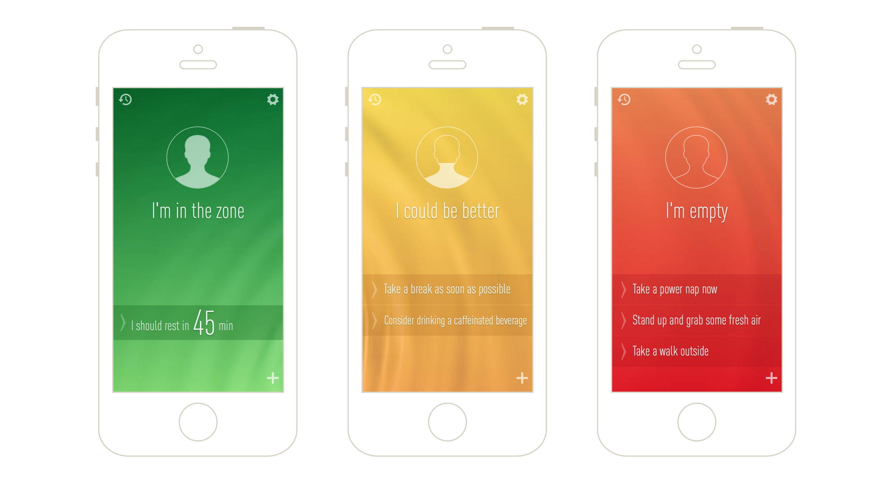
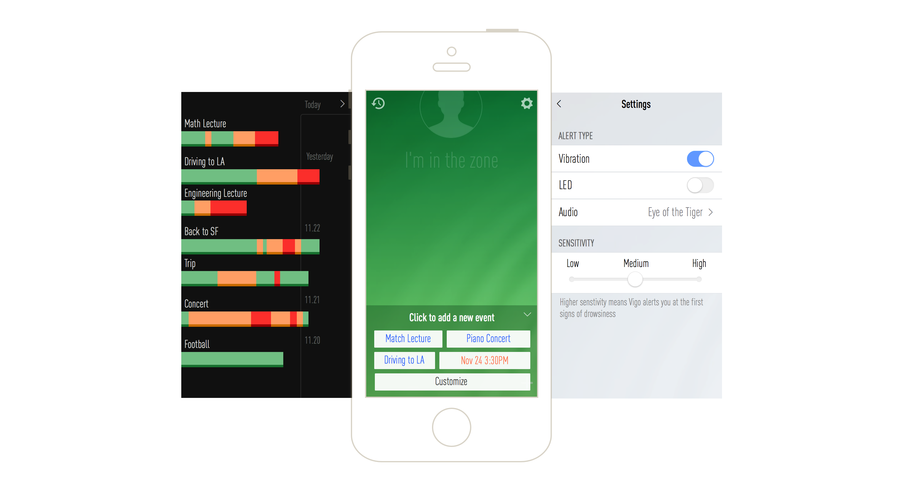

Understand the Users and Use Cases
1. Vigo's users are people who need to stay wide awake, such as truck drivers, pilots, and individuals who drive from San Francisco to Los Angeles along I5
2. Users will mostly only wear Vigo when they need. Vigo can alert users by sound and vibration, but users may want to know how drowsy they are at a certain time, or view their performance for some past activities
Product Design Goals
1. Save users time and help users achieve their goals as easy as possible (to know their current state and view past activities)
2. Delight or enlighten users by some recommendations according to their state of alertness

3. As users may use the App on-the-go, the interaction should be as simple as possible

Future Improvement
1. Improve the data visualization on log screen with more readability and interaction
2. Push notifications of current state (and possibly recommendations) to the lock screen